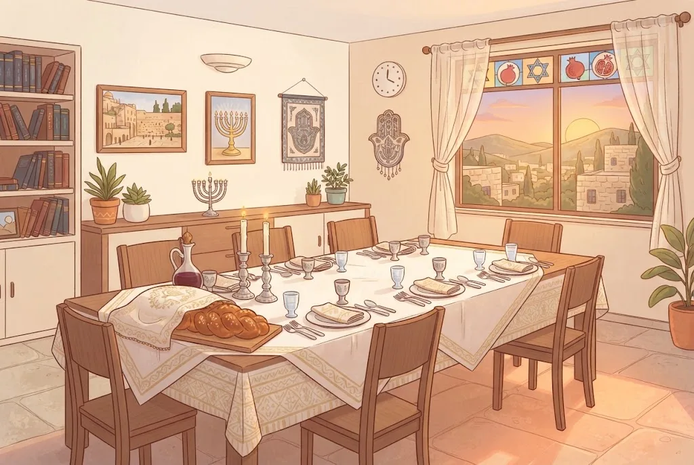

👑יוֹם הַזִּכָּרוֹן – מַמְלִיכִים אֶת ה׳
בְּרֹאשׁ הַשָּׁנָה ה׳ זוֹכֵר אֶת כָּל בְּרוּאָיו וְנוֹתֵן לָהֶם חַיִּים לַשָּׁנָה הַחֲדָשָׁה. עִקַּר תְּפִלּוֹת הַיּוֹם הוּא לְהַמְלִיךְ אֶת ה׳ עָלֵינוּ. לָכֵן בַּבְּרָכָה הַשְּׁלִישִׁית שֶׁל הָעֲמִידָה אוֹמְרִים ״הַמֶּלֶךְ הַקָּדוֹשׁ״ בִּמְקוֹם ״הָאֵל הַקָּדוֹשׁ״.
מִי שֶׁטָּעָה וְלֹא אָמַר ״הַמֶּלֶךְ הַקָּדוֹשׁ״ – לֹא יָצָא, וְחוֹזֵר לְהִתְפַּלֵּל.
💛 אַהֲבַת הַשֵּׁם: כְּשֶׁיִּשְׂרָאֵל מַנִּיחִים אֶת הַדְּאָגוֹת שֶׁלָּהֶם וְעוֹסְקִים בִּכְבוֹד ה׳, אוֹמֵר ה׳ לַמַּלְאָכִים: ״רְאוּ בָּנַי חֲבִיבַי!״
🍷חַג – וְגַם יוֹם דִּין
רֹאשׁ הַשָּׁנָה הוּא חַג, וּמִצְוָה לַעֲרֹךְ בּוֹ שְׁתֵּי סְעוּדוֹת מְכֻבָּדוֹת, בַּלַּיְלָה וּבַיּוֹם, וְלִשְׂמֹחַ בְּבָשָׂר וְיַיִן. אֲבָל לֹא אוֹכְלִים עַד הַשֹּׂבַע, כְּדֵי שֶׁיִּרְאַת ה׳ תִּהְיֶה עַל פָּנֵינוּ. וְאָסוּר לָצוּם בְּרֹאשׁ הַשָּׁנָה.
לוֹבְשִׁים בְּגָדִים נָאִים וּנְקִיִּים, אֲבָל לֹא אֶת הַיָּפִים בְּיוֹתֵר, מִפְּנֵי אֵימַת הַדִּין. יֵשׁ נוֹהֲגִים לִלְבֹּשׁ לָבָן. מִי שֶׁשְּׂעָרוֹ אָרֹךְ מִדַּי – מִסְתַּפֵּר לִכְבוֹד הֶחָג.
💛 אַהֲבַת הַשֵּׁם: אָדָם שֶׁיֵּשׁ לוֹ מִשְׁפָּט לוֹבֵשׁ שְׁחֹרִים וְדוֹאֵג. אֲבָל יִשְׂרָאֵל לוֹבְשִׁים לָבָן, אוֹכְלִים וְשׂוֹמְחִים – כִּי הֵם יוֹדְעִים שֶׁאֲבִיהֶם הַמֶּלֶךְ רוֹצֶה בְּטוֹבָתָם.
📕בְּלִי הַלֵּל וּבְלִי וִדּוּי
רֹאשׁ הַשָּׁנָה הוּא חַג, וּבְכָל זֹאת אֵין אוֹמְרִים בּוֹ הַלֵּל. הַמַּלְאָכִים שָׁאֲלוּ: לָמָּה? וְה׳ עָנָה: ״אֶפְשָׁר – מֶלֶךְ יוֹשֵׁב עַל כִּסֵּא דִּין, וְסִפְרֵי חַיִּים וְסִפְרֵי מֵתִים פְּתוּחִים לְפָנָיו, וְיִשְׂרָאֵל אוֹמְרִים שִׁירָה?!״
גַּם וִדּוּי לֹא אוֹמְרִים בְּרֹאשׁ הַשָּׁנָה. הַיּוֹם מֻקְדָּשׁ לְהַמְלָכַת ה׳ עַל כָּל הָעוֹלָם, וְאֶת הַתִּקּוּן הָאִישִׁי מַשְׁאִירִים לִשְׁאָר יְמֵי הַתְּשׁוּבָה.
💛 אַהֲבַת הַשֵּׁם: בְּרֹאשׁ הַשָּׁנָה אֲנַחְנוּ לֹא מִתְעַסְּקִים קֹדֶם בְּעַצְמֵנוּ, אֶלָּא בִּכְבוֹד הַמֶּלֶךְ. וְדַוְקָא כָּךְ אֲנַחְנוּ זוֹכִים בַּדִּין.
👑״הַמֶּלֶךְ הַקָּדוֹשׁ״
בְּרֹאשׁ הַשָּׁנָה וּבְכָל עֲשֶׂרֶת יְמֵי תְּשׁוּבָה חוֹתְמִים אֶת הַבְּרָכָה הַשְּׁלִישִׁית: ״הַמֶּלֶךְ הַקָּדוֹשׁ״. חֲתִימַת בִּרְכַּת הַחַג בְּכָל תְּפִלּוֹת רֹאשׁ הַשָּׁנָה: ״מֶלֶךְ עַל כָּל הָאָרֶץ, מְקַדֵּשׁ יִשְׂרָאֵל וְיוֹם הַזִּכָּרוֹן״.
גַּם בִּרְכַּת ״זִכְרוֹנוֹת״ וְגַם בִּרְכַּת ״שׁוֹפָרוֹת״ עוֹסְקוֹת בְּמַלְכוּת ה׳: הַמֶּלֶךְ זוֹכֵר אֶת בְּרוּאָיו, וְקוֹל הַשּׁוֹפָר מְגַלֶּה אֶת מַלְכוּתוֹ.
💛 אַהֲבַת הַשֵּׁם: הָרָצוֹן הֲכִי עָמֹק שֶׁל יִשְׂרָאֵל הוּא שֶׁמַּלְכוּת ה׳ תִּתְגַּלֶּה וְהָעוֹלָם יְתֻקַּן. בְּרֹאשׁ הַשָּׁנָה הָרָצוֹן הַזֶּה יוֹצֵא מִן הַלֵּב.
📅רֹאשׁ הַשָּׁנָה – יוֹמַיִם
לְפִי הַתּוֹרָה רֹאשׁ הַשָּׁנָה הוּא יוֹם אֶחָד, אֲבָל אֲפִלּוּ בְּאֶרֶץ יִשְׂרָאֵל שׁוֹמְרִים אוֹתוֹ יוֹמַיִם. בִּימֵי בֵּית הַדִּין קִדְּשׁוּ אֶת הַחֹדֶשׁ לְפִי עֵדִים, וְלֹא יָדְעוּ מֵרֹאשׁ מָתַי יָחוּל הַחַג. שְׁנֵי הַיָּמִים נִקְרָאִים ״יוֹמָא אֲרִיכְתָּא״ – יוֹם אָרֹךְ אֶחָד.
הַיּוֹם הָרִאשׁוֹן מִן הַתּוֹרָה, וְהַשֵּׁנִי מִדִּבְרֵי חֲכָמִים. אָסוּר לְהָכִין מִן הַיּוֹם הָרִאשׁוֹן לַשֵּׁנִי: לֹא מְבַשְּׁלִים, לֹא עוֹרְכִים אֶת הַשֻּׁלְחָן וְלֹא שׁוֹטְפִים כֵּלִים בִּשְׁבִילוֹ.
💛 אַהֲבַת הַשֵּׁם: הַזֹּהַר מְלַמֵּד שֶׁהַיּוֹם הַשֵּׁנִי נוֹסַף כְּדֵי שֶׁהַדִּין יִתְמַתֵּק בְּרַחֲמִים. ה׳ נוֹתֵן לָנוּ עוֹד יוֹם לְהִתְקָרֵב אֵלָיו.
🍇שְׁנֵי יָמִים וְ״שֶׁהֶחֱיָנוּ״
הַיּוֹם הָרִאשׁוֹן שֶׁל רֹאשׁ הַשָּׁנָה מִן הַתּוֹרָה, וְהַשֵּׁנִי מִדִּבְרֵי חֲכָמִים, וְאָסוּר לְהָכִין מִן הָרִאשׁוֹן לַשֵּׁנִי. בַּקִּדּוּשׁ שֶׁל הַלַּיְלָה הַשֵּׁנִי מְבָרְכִים ״שֶׁהֶחֱיָנוּ״, כְּדַעַת רֹב הַפּוֹסְקִים.
כְּדֵי לְבָרֵךְ לְכָל הַדֵּעוֹת, מֵבִיאִים לַשֻּׁלְחָן פְּרִי חָדָשׁ אוֹ לוֹבְשִׁים בֶּגֶד חָדָשׁ, וּמְכַוְּנִים עֲלֵיהֶם בַּ״שֶּׁהֶחֱיָנוּ״. אַחַר כָּךְ לֹא מְבָרְכִים שׁוּב ״שֶׁהֶחֱיָנוּ״ עַל הַפְּרִי.
💛 אַהֲבַת הַשֵּׁם: כָּל פְּרִי חָדָשׁ הוּא מַתָּנָה. כְּשֶׁאֲנַחְנוּ מוֹדִים עָלָיו, אֲנַחְנוּ מַתְחִילִים אֶת הַשָּׁנָה בְּהוֹדָאָה לַה׳.

🙏מַלְכֻיּוֹת, זִכְרוֹנוֹת וְשׁוֹפָרוֹת
בִּתְפִלַּת מוּסָף תִּקְּנוּ חֲכָמִים שָׁלֹשׁ בְּרָכוֹת מְיֻחָדוֹת: מַלְכֻיּוֹת – שֶׁנַּמְלִיךְ אֶת ה׳, זִכְרוֹנוֹת – שֶׁיַּעֲלֶה זִכְרוֹנֵנוּ לְפָנָיו לְטוֹבָה, וְשׁוֹפָרוֹת – וּבַמֶּה? בַּשּׁוֹפָר. בְּכָל בְּרָכָה עֲשָׂרָה פְּסוּקִים, כְּנֶגֶד עֲשָׂרָה מַאֲמָרוֹת שֶׁבָּהֶם נִבְרָא הָעוֹלָם.
סֵדֶר הַפְּסוּקִים: שְׁלֹשָׁה מִן הַתּוֹרָה, שְׁלֹשָׁה מִן הַכְּתוּבִים, שְׁלֹשָׁה מִן הַנְּבִיאִים, וּפָסוּק אַחֲרוֹן מִן הַתּוֹרָה. הַבְּרָכוֹת הֵן חֲטִיבָה אַחַת, וְגַם הַסֵּדֶר שֶׁלָּהֶן מְעַכֵּב.
💛 אַהֲבַת הַשֵּׁם: הַזִּכָּרוֹן שֶׁלָּנוּ עוֹלֶה לְטוֹבָה דַּוְקָא כְּשֶׁאֲנַחְנוּ מַמְלִיכִים אֶת ה׳ – כִּי כָּךְ אֲנַחְנוּ מְגַלִּים מָה בֶּאֱמֶת חָשׁוּב לָנוּ.
📜קְרִיאַת הַתּוֹרָה
בַּיּוֹם הָרִאשׁוֹן קוֹרְאִים: ״וַה׳ פָּקַד אֶת שָׂרָה״ – עַל לֵידַת יִצְחָק, וּמַפְטִירִים בְּחַנָּה שֶׁיָּלְדָה אֶת שְׁמוּאֵל. כִּי בְּרֹאשׁ הַשָּׁנָה נִפְקְדוּ שָׂרָה, רָחֵל וְחַנָּה. בַּיּוֹם הַשֵּׁנִי קוֹרְאִים אֶת עֲקֵדַת יִצְחָק, כְּדֵי לְהַזְכִּיר זְכוּת אָבוֹת.
כְּמוֹ בְּכָל חַג – חֲמִשָּׁה עוֹלִים. וּבִשְׁנֵי הַיָּמִים מוֹצִיאִים סֵפֶר שֵׁנִי, וְקוֹרְאִים בּוֹ אֶת קָרְבְּנוֹת הַיּוֹם לַמַּפְטִיר.
💛 אַהֲבַת הַשֵּׁם: אֵין דָּבָר שֶׁקָּשֶׁה מִדַּי לַה׳. בְּרֹאשׁ הַשָּׁנָה, יוֹם הַהִתְחַדְּשׁוּת, ה׳ יָכוֹל לְחַדֵּשׁ אֲפִלּוּ מָה שֶׁנִּרְאֶה בִּלְתִּי אֶפְשָׁרִי.
🍎סִימָנִים לְשָׁנָה טוֹבָה
כָּל מָה שֶׁעוֹשִׂים בְּרֹאשׁ הַשָּׁנָה הוּא סִימָן לְכָל הַשָּׁנָה. לָכֵן אוֹכְלִים מַאֲכָלִים שֶׁל סִימָן טוֹב: תַּפּוּחַ בִּדְבַשׁ – לְשָׁנָה טוֹבָה וּמְתוּקָה, רִמּוֹן – שֶׁיִּרְבּוּ זְכֻיּוֹתֵינוּ, רֹאשׁ שֶׁל דָּג – שֶׁנִּהְיֶה לְרֹאשׁ וְלֹא לְזָנָב, תְּמָרִים – שֶׁיִּתַּמּוּ שׂוֹנְאֵינוּ, וְסֶלֶק – שֶׁיִּסְתַּלְּקוּ שׂוֹנְאֵינוּ.
עַל כָּל סִימָן אוֹמְרִים תְּפִלָּה קְצָרָה: ״יְהִי רָצוֹן...״. הָעִקָּר הוּא לְהִתְעוֹרֵר מִתּוֹךְ הָאֲכִילָה לִתְשׁוּבָה וְלִתְפִלָּה.
💛 אַהֲבַת הַשֵּׁם: אֲפִלּוּ הָאֲכִילָה שֶׁלָּנוּ הוֹפֶכֶת לִתְפִלָּה. כְּשֶׁאָנוּ טוֹבְלִים תַּפּוּחַ בִּדְבַשׁ, אָנוּ מְבַקְּשִׁים מֵאָבִינוּ שָׁנָה מְתוּקָה.
🍯חַלָּה בִּדְבַשׁ
רַבִּים טוֹבְלִים בְּרֹאשׁ הַשָּׁנָה אֶת הַחַלָּה בִּדְבַשׁ, לְסִימָן שֶׁתִּהְיֶה הַשָּׁנָה טוֹבָה וּמְתוּקָה. יֵשׁ טוֹבְלִים קֹדֶם בִּמְעַט מֶלַח, וְיֵשׁ שֶׁרַק מַנִּיחִים מֶלַח עַל הַשֻּׁלְחָן. וְיֵשׁ שֶׁאֵינָם טוֹבְלִים בִּדְבַשׁ כְּלָל. כָּל הַמִּנְהָגִים כְּשֵׁרִים.
רַבִּים נִמְנָעִים בְּרֹאשׁ הַשָּׁנָה מִמַּאֲכָלִים חֲמוּצִים, מְלוּחִים וּמָרִים – כְּדֵי שֶׁהַסִּימָן יִהְיֶה טוֹב.
💛 אַהֲבַת הַשֵּׁם: רָאוּי לְכָל אֶחָד לְהַמְשִׁיךְ בְּמָסֹרֶת אֲבוֹתָיו. כָּל מִנְהָג הוּא דֶּרֶךְ יָפָה לְבַקֵּשׁ שָׁנָה מְתוּקָה.
🐟״לְרֹאשׁ וְלֹא לְזָנָב״
רֹאשׁ הַשָּׁנָה הוּא הַיּוֹם הָרִאשׁוֹן שֶׁל הַשָּׁנָה, וְכָל מַעֲשֶׂה, דִּבּוּר וּמַחֲשָׁבָה בּוֹ מַשְׁפִּיעִים עַל כָּל הַשָּׁנָה. ״סִימָנָא מִלְּתָא הִיא״ – לַסִּימָנִים יֵשׁ מַשְׁמָעוּת.
אוֹכְלִים רֹאשׁ שֶׁל דָּג אוֹ כֶּבֶשׂ – ״שֶׁנִּהְיֶה לְרֹאשׁ וְלֹא לְזָנָב״, וְדָגִים – שֶׁנִּפְרֶה וְנִרְבֶּה כְּדָגִים.
💛 אַהֲבַת הַשֵּׁם: כְּשֶׁמַּתְחִילִים אֶת הַשָּׁנָה בְּטוֹב, בְּשִׂמְחָה וּבִתְפִלָּה – הַטּוֹב נִמְשָׁךְ לְכָל הַשָּׁנָה.
🔀שְׁנֵי מִנְהָגִים – וּשְׁנֵיהֶם כַּהֲלָכָה
כְּשֶׁרֹאשׁ הַשָּׁנָה חָל בְּשַׁבָּת: לְמִנְהַג הָאַשְׁכְּנַזִּים (וְגַם הַתֵּימָנִים וְחֵלֶק מִן הַסְּפָרַדִּים) – לֹא אוֹמְרִים ״אָבִינוּ מַלְכֵּנוּ״, כִּי לֹא מְבַקְּשִׁים צְרָכִים בְּשַׁבָּת. לְמִנְהַג רֹב הַסְּפָרַדִּים – אוֹמְרִים, וְכָךְ הִסְכִּים גַּם הָאֲרִ״י. וְיֵשׁ עוֹד מִנְהָגִים חֲלוּקִים: רַבִּים אוֹמְרִים תַּשְׁלִיךְ, וְיֵשׁ גְּדוֹלִים שֶׁלֹּא נָהֲגוּ בּוֹ. רַבִּים טוֹבְלִים אֶת הַחַלָּה בִּדְבַשׁ, וְיֵשׁ שֶׁלֹּא נָהֲגוּ לִטְבֹּל בִּדְבַשׁ.
בְּרֹאשׁ הַשָּׁנָה שֶׁחָל בְּשַׁבָּת גַּם לֹא תּוֹקְעִים בַּשּׁוֹפָר, וְרַבִּים דּוֹחִים אֶת הַתַּשְׁלִיךְ לַיּוֹם הַשֵּׁנִי.
💛 אַהֲבַת הַשֵּׁם: כָּל מִנְהָג נוֹסַד עַל יְדֵי גְּדוֹלֵי תּוֹרָה. כָּל אֶחָד שׁוֹמֵר בְּאַהֲבָה עַל מִנְהַג אֲבוֹתָיו, וְכֻלָּנוּ מַמְלִיכִים יַחַד אֶת אוֹתוֹ מֶלֶךְ.
🍽️סֵדֶר הַסְּעוּדָה
הַמִּנְהָג הַנָּכוֹן יוֹתֵר: אַחֲרֵי הַקִּדּוּשׁ נוֹטְלִים יָדַיִם, מְבָרְכִים ״הַמּוֹצִיא״ עַל הַחַלָּה, וְרַק אַחַר כָּךְ אוֹכְלִים אֶת הַסִּימָנִים. עַל פֵּרוֹת הָעֵץ מְבָרְכִים ״בּוֹרֵא פְּרִי הָעֵץ״ – וְנָכוֹן לְבָרֵךְ עַל הַתָּמָר, כִּי הוּא חָשׁוּב בְּשִׁבְעַת הַמִּינִים.
אַחֲרֵי הַבְּרָכָה עַל הַתָּמָר אוֹכְלִים מִמֶּנּוּ מְעַט, וְרַק אַחַר כָּךְ אוֹמְרִים ״יְהִי רָצוֹן״ – כְּדֵי לֹא לְהַפְסִיק בֵּין הַבְּרָכָה לָאֲכִילָה.
💛 אַהֲבַת הַשֵּׁם: גַּם בְּסֵדֶר הַבְּרָכוֹת אֲנַחְנוּ מְכַבְּדִים: קֹדֶם הַלֶּחֶם הֶחָשׁוּב, וְאַחֲרָיו הַפְּרִי הֶחָשׁוּב. כָּךְ כָּל דָּבָר בָּא בִּמְקוֹמוֹ.
😊סִימָן טוֹב בַּהִתְנַהֲגוּת
בְּרֹאשׁ הַשָּׁנָה לֹא כּוֹעֲסִים, לֹא מִתְקוֹטְטִים וְלֹא מְדַבְּרִים רָעוֹת עַל אֲחֵרִים – גַּם כִּי זֶה אָסוּר, וְגַם כִּי זֶה סִימָן רַע לַשָּׁנָה. מַרְבִּים בְּאַהֲבָה, דָּנִים לְכַף זְכוּת, וּמְשַׂמְּחִים אֶת כָּל בְּנֵי הַמִּשְׁפָּחָה.
לֹא מַרְבִּים בְּשֵׁנָה בְּרֹאשׁ הַשָּׁנָה, אֶלָּא לוֹמְדִים תּוֹרָה. מִי שֶׁיּוֹשֵׁב בְּטֵלָה, אַף שֶׁהוּא עֵר – נֶחְשָׁב כְּיָשֵׁן. וּמִי שֶׁעָיֵף אַחֲרֵי הַסְּעוּדָה – טוֹב שֶׁיִּישַׁן, כְּדֵי שֶׁיּוּכַל לִלְמֹד כָּרָאוּי.
💛 אַהֲבַת הַשֵּׁם: כְּשֶׁאֲנַחְנוּ מְוַתְּרִים לְאַחִים וְלַחֲבֵרִים, גַּם ה׳ מְוַתֵּר לָנוּ. שָׁנָה שֶׁמַּתְחִילָה בְּאַהֲבָה – מַמְשִׁיכָה בְּאַהֲבָה.
💌״לְשָׁנָה טוֹבָה תִּכָּתֵב וְתֵחָתֵם״
אַחֲרֵי תְּפִלַּת עַרְבִית מְבָרְכִים זֶה אֶת זֶה: ״לְשָׁנָה טוֹבָה תִּכָּתֵב וְתֵחָתֵם״. גַּם לְמָחֳרָת מְבָרְכִים כָּךְ, אֲבָל אַחֲרֵי חֲצוֹת הַיּוֹם אוֹמְרִים רַק ״שָׁנָה טוֹבָה״.
מִי שֶׁמְּבָרְכִים אוֹתוֹ – מֵשִׁיב בְּאוֹתָן בְּרָכוֹת, אוֹ אוֹמֵר: ״וְכֵן לְמַר״ – כְּלוֹמַר, כָּל הַבְּרָכוֹת יָחוּלוּ גַּם עָלֶיךָ. לְאִשָּׁה אוֹ לְבַת אוֹמְרִים: ״לְשָׁנָה טוֹבָה תִּכָּתְבִי וְתֵחָתְמִי״.
💛 אַהֲבַת הַשֵּׁם: בְּרָכָה טוֹבָה לְחָבֵר הִיא גַּם תְּפִלָּה עָלָיו. כְּשֶׁאֲנַחְנוּ מְבָרְכִים זֶה אֶת זֶה, כָּל עַם יִשְׂרָאֵל מִתְפַּלֵּל זֶה עַל זֶה.
🌊תַּשְׁלִיךְ
רַבִּים נוֹהֲגִים לָלֶכֶת בַּיּוֹם הָרִאשׁוֹן לְמָקוֹם שֶׁל מַיִם – יָם, נָהָר אוֹ מַעְיָן – וְלוֹמַר פְּסוּקִים, וּבָהֶם: ״וְתַשְׁלִיךְ בִּמְצֻלוֹת יָם כָּל חַטֹּאתָם״. יֵשׁ נוֹהֲגִים לְנַעֵר אֶת שׁוּלֵי הַבְּגָדִים – לְהַרְאוֹת שֶׁהַחֲטָאִים חִיצוֹנִיִּים לָנוּ.
זוֹ אֵינָהּ חוֹבָה, וְיֵשׁ גְּדוֹלִים שֶׁלֹּא נָהֲגוּ כָּךְ. כְּשֶׁהַיּוֹם הָרִאשׁוֹן חָל בְּשַׁבָּת, רַבִּים דּוֹחִים אֶת הַתַּשְׁלִיךְ לַיּוֹם הַשֵּׁנִי. וּכְשֶׁאֵין מַיִם קְרוֹבִים – אוֹמְרִים לְיַד בּוֹר מַיִם אוֹ מִקְוֶה. רֹב הַנָּשִׁים לֹא נָהֲגוּ לוֹמַר תַּשְׁלִיךְ, וּמִי שֶׁרוֹצָה – רַשָּׁאִית.
💛 אַהֲבַת הַשֵּׁם: הַמַּיִם רוֹמְזִים לְטָהֳרָה. כְּשֶׁאָדָם שָׁב בִּתְשׁוּבָה, הוּא מִתְנַקֶּה – וַעֲווֹנוֹתָיו נֶעֱלָמִים כְּמוֹ בִּמְצוּלוֹת הַיָּם.
🧠 בְּדֹק אֶת עַצְמְךָ
בְּלֵיל רֹאשׁ הַשָּׁנָה הַשֵּׁנִי, מָה כְּדַאי לְהָבִיא לַשֻּׁלְחָן לִפְנֵי הַקִּדּוּשׁ?
💡 לְדַעַת רֹב הַפּוֹסְקִים מְבָרְכִים ״שֶׁהֶחֱיָנוּ״ גַּם בַּלַּיְלָה הַשֵּׁנִי, וְעִם פְּרִי חָדָשׁ – הַבְּרָכָה טוֹבָה לְכָל הַדֵּעוֹת. וְאָסוּר לְבַשֵּׁל מִן הַיּוֹם הָרִאשׁוֹן לַשֵּׁנִי.
בַּיּוֹם הָרִאשׁוֹן שֶׁל רֹאשׁ הַשָּׁנָה. מָתַי מֻתָּר לַעֲרֹךְ אֶת הַשֻּׁלְחָן לַסְּעוּדָה שֶׁל הַלַּיְלָה הַשֵּׁנִי?
💡 אָסוּר לְהָכִין מִן הַיּוֹם הָרִאשׁוֹן לַשֵּׁנִי – לֹא לְבַשֵּׁל, לֹא לַעֲרֹךְ אֶת הַשֻּׁלְחָן וְלֹא לִשְׁטֹף כֵּלִים בִּשְׁבִילוֹ. מְחַכִּים עַד שֶׁהַיּוֹם הַשֵּׁנִי מַתְחִיל.
כַּמָּה פְּסוּקִים אוֹמְרִים בְּכָל אַחַת מִשָּׁלֹשׁ הַבְּרָכוֹת הַמְּיֻחָדוֹת שֶׁל מוּסָף?
💡 בְּכָל בְּרָכָה עֲשָׂרָה פְּסוּקִים – כְּנֶגֶד עֲשָׂרָה מַאֲמָרוֹת, עֲשֶׂרֶת הַדִּבְּרוֹת וַעֲשָׂרָה ״הַלְלוּיָהּ״ שֶׁבַּמִּזְמוֹר הָאַחֲרוֹן בִּתְהִלִּים: שְׁלֹשָׁה מִן הַתּוֹרָה, שְׁלֹשָׁה מִן הַכְּתוּבִים, שְׁלֹשָׁה מִן הַנְּבִיאִים וְעוֹד אֶחָד מִן הַתּוֹרָה.
📚 עוֹד חָמְרֵי לִמּוּד עַל הֲלָכָה – חִנָּם, בַּמַּאֲגָר הַקּוֹל הַחֲמִישִׁי:
kol-toda.co.il/halacha
הַמַּאֲגָר הַמָּלֵא: kol-toda.co.il
הַמַּאֲגָר הַמָּלֵא: kol-toda.co.il